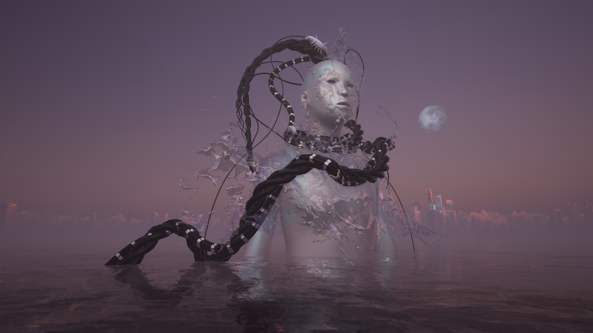
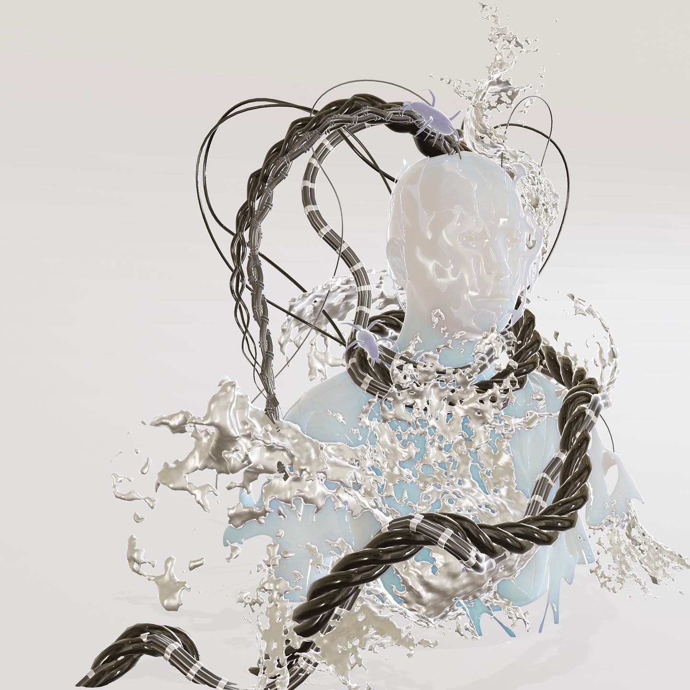

2021, ongoing
View A.A.G live in REPLICANTS Virtual Exhibition in Epoch Gallery.
A.A.G. is a transpacific deity born from submarine fiber optic cables, and the desire for human connection across the Pacific Ocean. Manifested as a goddexx, A.A.G. is a hybrid of the organic and the inorganic, brought forth from the interconnection of geographies, machines, physical undersea infrastructure, and the deep sea creatures that grow on it’s metal piping. Representing non-linear pathways of communication streams across the ocean, of both histories and future destinations, they can appear in many places and times at once, enabling the flow of the internet across the world. Here we see them surfaced at a cable landing in Hong Kong. In the dialogue playing in the background, A.A.G. has brought together two oceanic deities across the Pacific ocean: Mazu 妈祖 (a Chinese sea goddess, spoken by Qianqian Ye) and Hina opuhala ko’a (a Hawaiian goddess of coral reefs, spoken by Tiare Ribeaux). We hear all three in conversation as they confer about the state of humanity and the growth of technology over the past 1000 years.
A.A.G. stands for the Asia-America Gateway submarine cable system that has landing points in California, Keawaula, Hawai’i, Lantau Island, Hong Kong, as well as Guam, Malaysia, Brunei, the Philippines, Singapore, and Thailand. The acronym as an utterance brings to mind a primordial state of being.
A.A.G. is part of Kai 海 Hai (a hybrid of ‘Ocean’ in ʻŌlelo Hawai'i and Chinese), a series of virtual and augmented reality installations utilize transpacific stories, oral histories, myth and folklore from Polynesia to Asia - to explore environmental issues, indigenous and immigrant stories, migratory paths, and diaspora across the Pacific Ocean. Kai 海 Hai is a collaboration between Kānaka Maoli artist and filmmaker Tiare Ribeaux (from Honolulu based in the Bay Area) and Chinese artist and technologist Qianqian Ye (from Wenzhou based in LA). Mapping the ocean surface between Wenzhou, Honolulu, the Bay Area, and Los Angeles, this project remixes the ancestral, personal, and speculative stories about the Pacific Ocean.
Time: 2021, ongoing
A.A.G in REPLICANTS Virtual Exhibition
Rendering
Copyright © Qianqian Ye